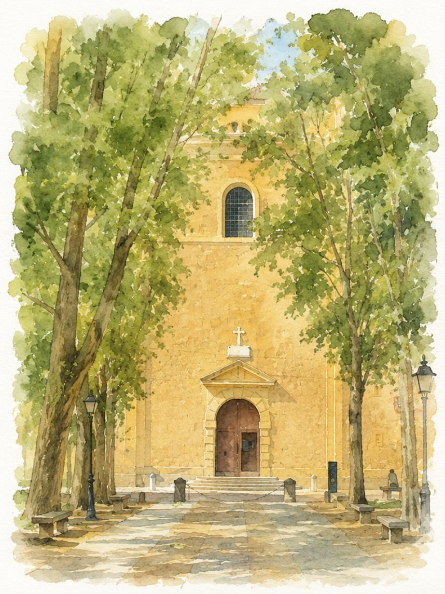
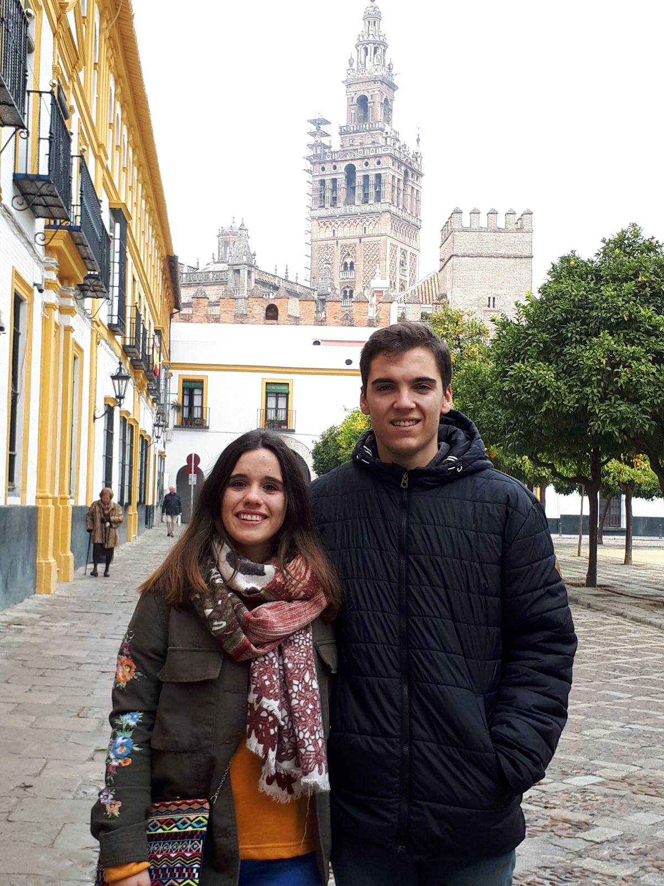
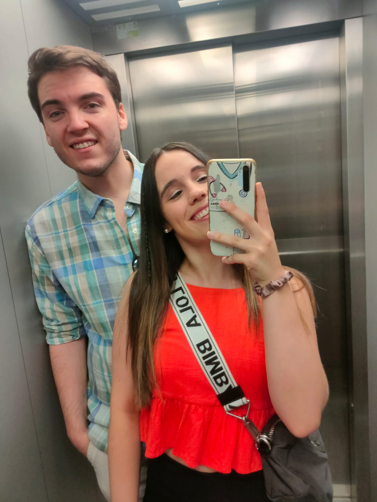
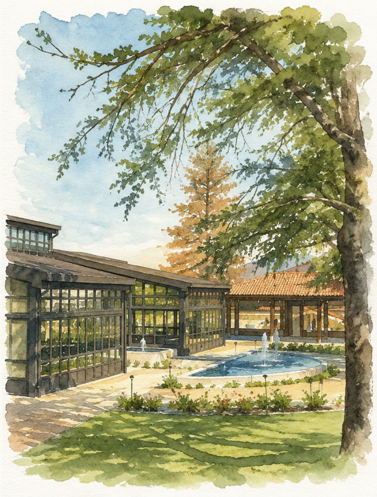

Ceremonia · 12:30
Santuario de la
Virgen de la Fuencisla
El lugar donde diremos el “sí, quiero”.

Pero espera.
Septiembre de 2014. Un examen práctico. Dos personas intentando sacarse el carnet de conducir.
Lo que ninguno de los dos sabía al irse cada uno por su camino es que se acabarían uniendo de nuevo... y para siempre.
Madrid · ida y vuelta
Después llegaron los viajes en AVE para ir y volver de la Universidad. Hablábamos cada vez más y empezamos a preguntarnos a qué hora cogeríamos el tren para, casualmente, coincidir.
Alguna clase se perdió por el camino. No diremos cuántas. La estadística no nos favorece.

2017
Y empezamos a buscarnos a nosotros.

Diciembre de 2017
Sevilla fue nuestro primer viaje juntos. Después vinieron más viajes, más planes, más historias y, con el tiempo, una vida entera que construir juntos.
Nos ha llevado unos cuantos años llegar hasta aquí. Pero, oye, tampoco teníamos prisa.


Diciembre de 2022
Y desde entonces hemos descubierto que querer a alguien también es decidir quién ha dejado la luz encendida, discutir por la temperatura del aire acondicionado y seguir eligiéndose al final del día.

Una relación basada en valores.

Porque una boda muy elegante no significa que tengamos que comportarnos como adultos.
El gran día
Tenemos una cita en Segovia.

Ceremonia · 12:30
El lugar donde diremos el “sí, quiero”.

Celebración · 14:00
Donde celebraremos que, efectivamente, lo hemos conseguido.


Después de la ceremonia
Y, conociéndonos, probablemente habrá alguna decisión de la que nadie quiera hablar al día siguiente.
Se recomienda venir con hambre, ganas de bailar y cero expectativas de acostarse pronto.
Ahora te toca a ti
La confirmación de asistencia será el siguiente paso. Por ahora, guarda la fecha:
Activaremos el formulario cuando tengamos todos los detalles cerrados.
Hasta que llegue el gran día.

Y después de todo...
Irene & Juan · Segovia · 15.05.2027